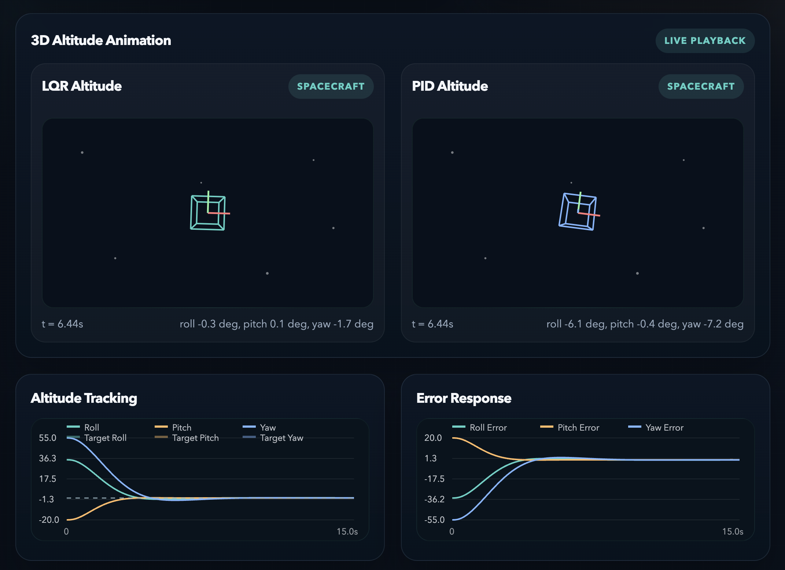
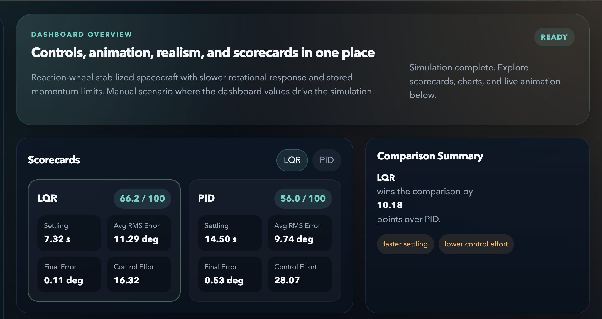
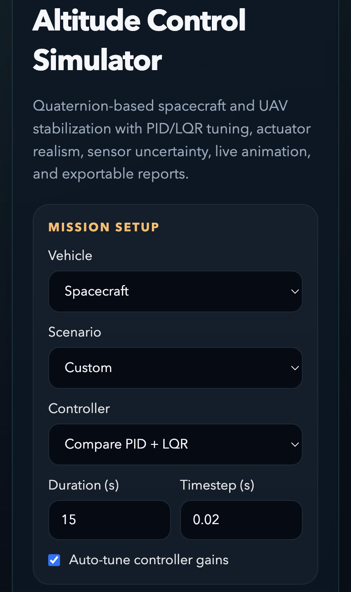

Aerospace Engineering Student
Ethan Mathew
A high-performance engineering portfolio built around aerospace thinking, control systems, simulation, and hands-on hardware integration.
About Me
Engineering is how I solve, build, and grow.
Engineering is more than my field of study; it is the way I approach problems, growth, and my future. As an Aerospace Engineering Student, I have developed a strong commitment to understanding how complex systems work and how thoughtful design can turn ideas into real, useful solutions. My interest in robotics, embedded systems, and Aerospace Technology has strengthened that commitment and pushed me to build a foundation that is both technical and practical.
I have fully embraced the engineering mindset by consistently expanding my skill set inside and outside the classroom. Alongside my coursework, I use Python extensively for projects, have built experience with MATLAB in academic settings, and have worked on projects such as the Altitude Control Simulator Application that reflect my interest in applying engineering principles to functional systems. Strong engineering portfolios are most effective when they show relevant projects, diverse technical skills, and a clear story of how a candidate solves problems, which is the standard I aim to meet through the work I take on.
I am especially drawn to engineering because it sits at the intersection of precision, performance, and innovation. Aerospace technology has deepened that passion for me through my interest in aircraft, rockets, and aerodynamics, where small design changes can have major effects on stability, efficiency, and control.
My wind tunnel project gave me the opportunity to engage with these ideas in a more applied way by working through airflow, testing, and performance-based engineering thinking, while also reinforcing my interest in the broader mechanical engineering disciplines behind cars, motorsports, and Formula 1 technology.
What drives me most is the opportunity to innovate, create, and contribute to meaningful work in the engineering industry. I am motivated not only by learning new tools, but by applying them to build systems that are efficient, intelligent, and impactful.
My long-term goal is to continue growing into an engineer who combines technical depth with creativity and discipline to develop solutions that matter in the real world.
Software Skills
Engineering software work centered on simulation, analysis, and control.
Primary Strength
Advanced
Python
Primary development language for engineering applications, simulator logic, data handling, visualization, and project tooling.
Academic Use
Working Experience
MATLAB
Experience using MATLAB in academic engineering settings for technical problem solving, analysis, and mathematical modeling.
Certified
Microsoft Excel
Spreadsheet Analysis
Microsoft Certification in Excel supporting data organization, calculation, engineering documentation, and structured reporting.
Project-Based
Control Systems
Modeling and Visualization
Experience building interfaces, comparing controller behavior, and presenting engineering performance through readable dashboards.
Notable Software Skills Used Across Projects
Key tools and workflows behind the engineering builds.
Engineering Application Development
Building project interfaces, application logic, and structured engineering workflows in Python.
Simulation and System Modeling
Creating dynamic simulation behavior for aerospace and control-oriented engineering scenarios.
Control Systems Comparison
Evaluating PID and LQR performance through response metrics, stability trends, and controller behavior.
Data Visualization
Translating engineering outputs into readable charts, scorecards, plots, and technical dashboards.
Technical Analysis and Reporting
Organizing outputs for interpretation, documenting behavior, and supporting engineering decision-making.
User-Facing Engineering UI
Designing layouts that make simulation controls, telemetry, and project results easier to inspect.
Featured Software Project
Altitude Control Simulator
The Altitude Control Simulator is a control-focused engineering application designed around quaternion-based spacecraft and UAV stabilization. The project compares PID and LQR controller behavior through live animation, response tracking, scorecards, and performance summaries, giving a clearer picture of settling, control effort, and system stability.
It demonstrates practical engineering software development through simulation design, controller comparison, data visualization, and interface construction. The project reflects the kind of work I enjoy most: building tools that make technical behavior easier to understand, test, and improve.
PID and LQR comparison
Quaternion-based attitude modeling
Live charts and animation
Performance scorecards
Readable engineering UI



Hardware Engineering
Wind tunnel development built around integration, testing, and flow insight.
Wind Tunnel Project
Hardware Engineering Skill Report
This project progressed from simple component salvage into a more advanced exercise in system integration, airflow engineering, and embedded diagnostics. It required evaluating hardware at the component level, building a functional structure around it, and connecting the physical system to digital feedback tools.
Advanced Component Salvage and Circuit Analysis
Reverse-engineered functional sub-systems from consumer electronics, identified an XQ-LS-P100GPSRX video transmission board, worked with JST-SH 1.0 mm connectors and FPC ribbon cables, and repurposed an ultrasonic vapor emitter and driver circuit for cold-mist generation.
Structural Materials and Aerospace Design
Evaluated acrylic versus polycarbonate, selected 1/8-inch Baltic Birch for structural support, and designed a 12-inch cube-style test section with the geometry needed to balance visibility, rigidity, and airflow performance.
Power Systems and Thermal Management
Managed regulated power between flight electronics and a video transmitter, protected Wi-Fi signal performance, and created a stationary cooling strategy to offset heat buildup when the system was operating outside of flight conditions.
Fluid Dynamics and Flow Visualization
Used honeycomb straighteners to support laminar flow behavior, leveraged ultrasonic cold mist to visualize streamlines without adding thermal distortion, and differentiated centrifugal versus axial airflow behavior for the right mechanical purpose.
Hardware-Software Handshake
Probed RTSP and UDP stream protocols, bypassed closed hardware app limitations, and used a custom interface as a real-time diagnostics layer to validate connectivity and system health during testing.
Testing Protocol
Validation Workflow
- Pre-Test Calibration: Level the camera, establish a pixels-to-inches reference, and record a zero-flow baseline to catch distortion or noise before airflow begins.
- Flow Initialization: Activate the smoke manifold, ramp the propulsion fan, and verify straight, parallel streamlines after the honeycomb straightener.
- Aerodynamic Object Analysis: Study boundary layer behavior, raise angle of attack, identify stall onset, and observe the wake signature behind the test object.
- Data Capture and Logging: Timestamp events, export frames for further physics-based review, and monitor thermal health to confirm stable operation throughout the session.
This workflow turns the build into more than a device; it becomes a controlled engineering experiment that connects physical hardware output to software-assisted measurement and analysis.
Engineering Focus
Driven by aerospace systems and practical problem solving.
This portfolio is built to show not just what I study, but how I think: combining technical depth, visual clarity, and hands-on execution across software and hardware engineering work.